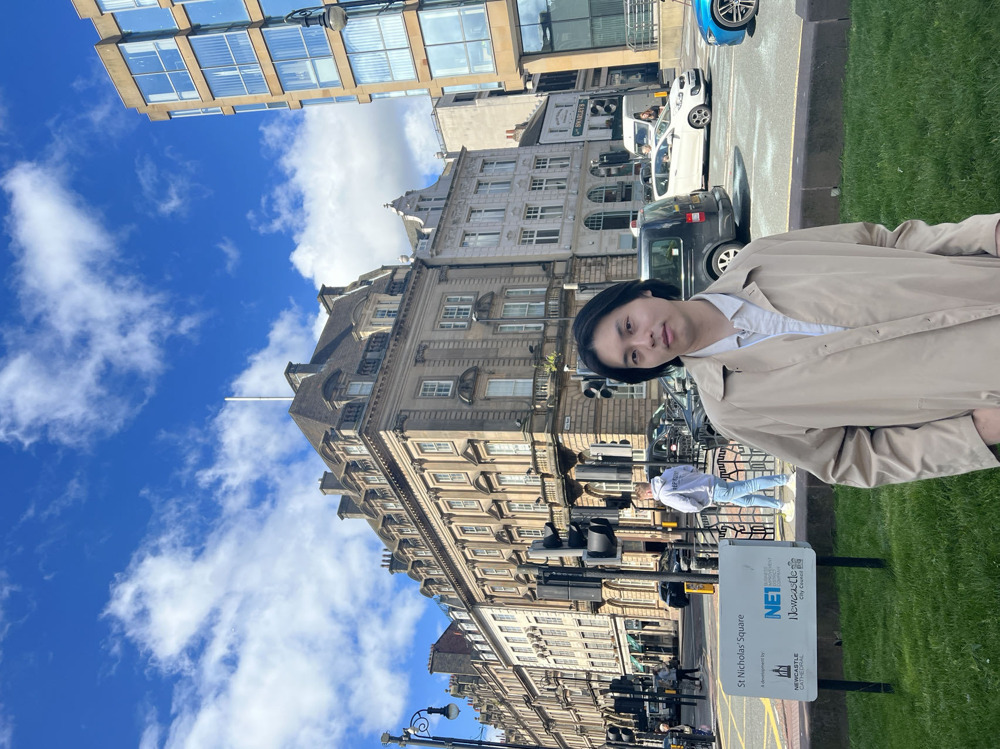

PhD Student in Computer Science · North Carolina State University
I study how developers interact with AI. My work sits at the intersection of Software Engineering and Human-Computer Interaction, using mixed-methods user studies to understand usability, trust, and cognition in AI-assisted programming.
I bridge HCI and Software Engineering to understand how people — especially developers — interact with AI. I run mixed-methods user studies and build research tools to capture how AI is reshaping programming behavior, trust, and cognition in the wild.
I am fortunate to be co-advised by Dr. Bowen Xu and Dr. Kathryn Thomasset Stolee at NC State.